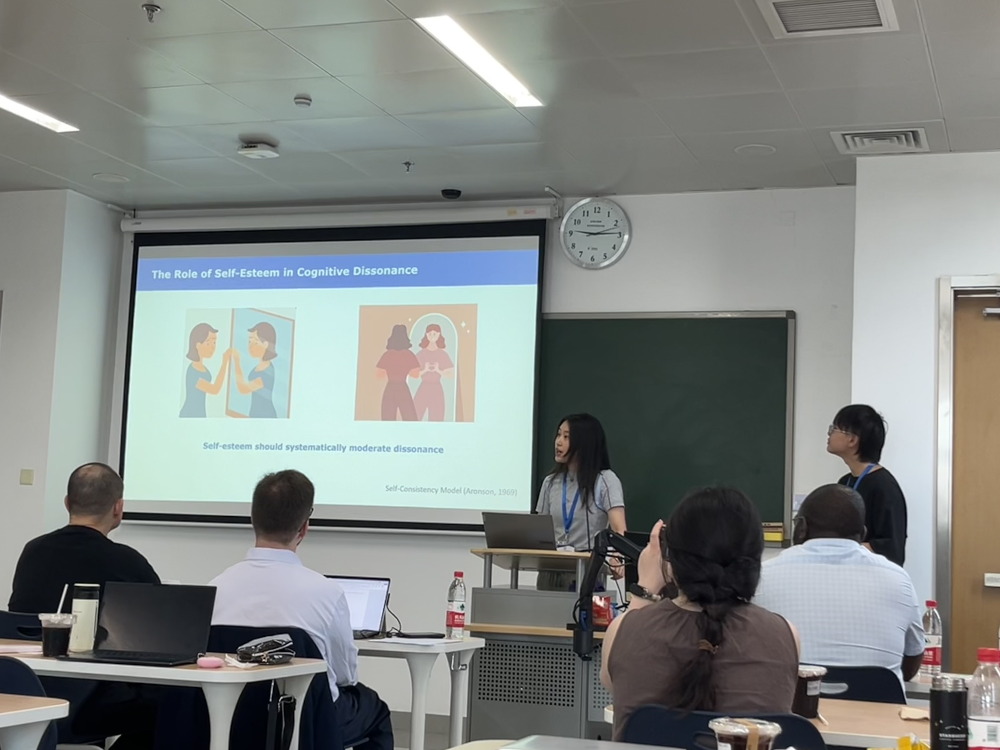

Communicating through Acting: Affording Communicative Intention in Pantomimes.
Cognitive Science, 49(10), e70120. DOI
From Gestalt Boundary to Psychological Border: How Perceptual Structure Constrains Strategic Planning and Intention Inference.
Journal of Experimental Psychology: General.
Joint Commitment in Human Cooperative Hunting through an “Imagined We”.
Proceedings of the Royal Society B, 292(2055), 20243070.DOI
A Bayesian Theory of Mind Approach to Modeling Cooperation and Communication.
Wiley Interdisciplinary Reviews: Computational Statistics, e1631. [∗co-first author] DOI
Generative visual common sense: Testing analysis-by-synthesis on Mondrian-style image.
Journal of Experimental Psychology: General. DOI
Slow But Motivated: Social Learning in Open-ended Intellectual Innovation.
Proceedings of the Annual Meeting of the Cognitive Science Society.
Communicating through Acting: The Role of Contextual Affordance in Intuitive Pantomimetic Gestural Communication.
Proceedings of the Annual Meeting of the Cognitive Science Society (vol. 47)
Territorial Gestalt in the Strategy of Conflicts.
Proceedings of the Annual Meeting of the Cognitive Science Society (Vol. 47).
Joint Commitment in Human Cooperative Hunting through an “Imagined We”.
Journal of Vision, 24(10), 1382–1382.
Perceptual Gestalt at War.
Journal of Vision, 24(10), 787–787.
Exploring an imagined “we” in human collective hunting: Joint commitment within shared intentionality.
Proceedings of the Annual Meeting of the Cognitive Science Society (Vol. 44, No. 44).
Jointly Perceiving Physics and Mind: Motion, Force, and Intention.
Proceedings of the Annual Meeting of the Cognitive Science Society (Vol. 43, No. 43).
Joint Commitment in Human Cooperative Hunting through an “Imagined We” [Talk].
VSS 2024, St. Pete Beach, United States.
Exploring an Imagined “We” in Collective Hunting: Joint Commitment within Shared Intentionality [Data Blitz Talk].
CogForum, University of California, Los Angeles, United States.
Exploring an Imagined “We” in Collective Hunting: Joint Commitment within Shared Intentionality [Spotlight Talk].
RSS 2022: Social Intelligence in Humans and Robots, New York City, United States.
Exploring an Imagined “We” in Human Collective Hunting: Joint Commitment within Shared Intentionality [Talk].
CogSci 2022, Toronto, Canada.
Slow But Motivated: Social Learning in Open-ended Intellectual Innovation.
Cognitive Science Society 2026, Rio de Janeiro, Brazil.
Cognition in the Loop: Socio-Cognitive Skills Predict AI-Assisted Learning in Human-AI Interaction.
Comm Horizons 2026, UC Davis, California, United States.
Conceptual Innovation through the Lens of Stories.
California Workshop on Evolutionary Social Science, Santa Barbara, California, United States.
Communicating through Acting: The Role of Contextual Affordance in Intuitive Pantomimetic Gestural Communication.
Cognitive Science Society 2025, San Francisco, California, United States.
Perceiving Animacy through Schematic Intuitive Physics: Shared Conceptual Structure of Animacy between Vision and Language.
Poster presented at VSS 2024, St. Pete Beach, United States.
Perceptual Gestalt at War.
Poster presented at VSS 2024, St. Pete Beach, United States.
Exploring an Imagined “We” in Collective Hunting: Joint Commitment within Shared Intentionality.
Poster and talk presented at RSS 2022: Social Intelligence in Humans and Robots, New York City, United States.
Siyi participated at Summer Institutes of Computational Social Science (SICSS)-Beijing, 2024, where she learned ways to incorporate Large Language Models in her research. She was awarded an scholarship for outstanding presentation of group project “Revisiting the Role of Self-esteem in Eliciting Cognitive Dissonance Using Simulated LLM Agents.” Here is a picture of her presenting the group project.
